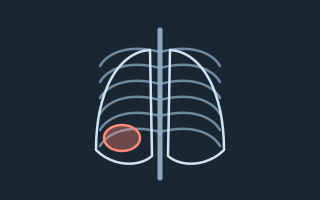
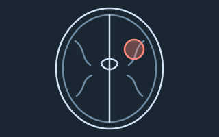
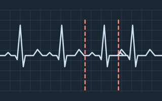
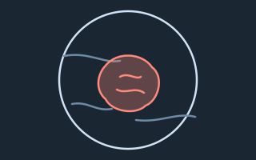
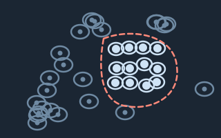
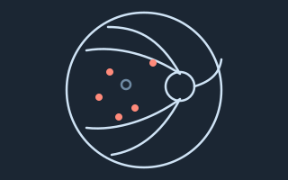
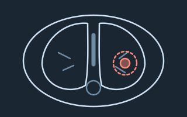
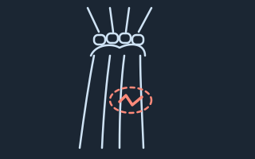

Огляд проєкту
Знімки й записи, які лікарі передали для навчання моделей, що допомагатимуть виявляти патології. Кожен файл знеособлюється до потрапляння в датасет.
Зведені дані
- 48 216 знімків передано +1 312 за тиждень
- 1 274 лікарі-учасники з 23 областей
- 63 % розмічено двома лікарями мета — 80 % до весни
- 99,2 % пройшли перевірку знеособлення решта — на ручному розгляді
Датасети
-

Готовий до навчанняРентген грудної клітки — пневмонія
Прямі проєкції дорослих пацієнтів, кожен знімок розмітили два рентгенологи.
Переглянути 12 480 знімків -

Готовий до навчанняМРТ головного мозку — пухлини
Аксіальні зрізи T1 і T2 з контурами новоутворень, які обвели нейрорадіологи.
Переглянути 6 920 зрізів -

Триває збірЕКГ — порушення ритму
Записи у 12 відведеннях з висновком кардіолога: фібриляція передсердь, блокади, екстрасистолії.
Переглянути 9 305 записів -

Триває збірДерматоскопія — меланома
Знімки новоутворень шкіри з результатом гістології, коли біопсію робили.
Переглянути 4 118 знімків -

На перевірціГістологія — пухлини молочної залози
Скани скелець, забарвлених гематоксиліном і еозином, з позначеними ділянками пухлини.
Переглянути 2 760 сканів -

Готовий до навчанняОчне дно — діабетична ретинопатія
Фото сітківки зі стадією ретинопатії за міжнародною шкалою від офтальмолога.
Переглянути 5 640 фото -

Триває збірКТ легень — вузлики
Серії зрізів з координатами й розміром кожного вузлика понад 3 мм.
Переглянути 3 215 серій -

На перевірціРентген кісток — переломи
Знімки кистей і передпліч від травматологів, лінію перелому обведено.
Переглянути 3 776 знімків